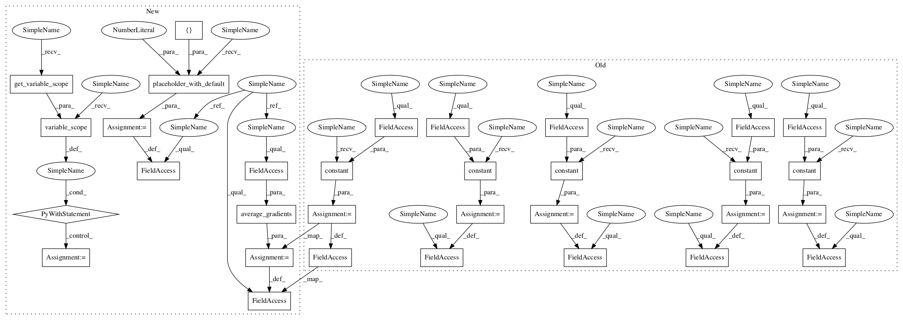

6bdf6eeaac847d25844dae3390504d402ce095d8,code/gifqa/models/mc_models.py,MCSp,build_graph,#MCSp#Any#Any#Any#Any#Any#Any#,224

Before Change
self.word_embed_t = tf.get_variable("Word_embed",
[self.vocabulary_size, self.word_dim],
initializer=tf.random_normal_initializer(stddev=0.1))
self.dropout_keep_prob_cell_input_t = tf.constant(self.dropout_keep_prob_cell_input)
self.dropout_keep_prob_cell_output_t = tf.constant(self.dropout_keep_prob_cell_output)
self.dropout_keep_prob_fully_connected_t = tf.constant(self.dropout_keep_prob_fully_connected)
self.dropout_keep_prob_output_t = tf.constant(self.dropout_keep_prob_output)
self.dropout_keep_prob_image_embed_t = tf.constant(self.dropout_keep_prob_image_embed)
self.agg_batch_size = self.batch_size_per_gpu * MULTICHOICE_COUNT
for idx, device in enumerate(self.devices):
After Change
FLAGS.layer = "conv"
def build_graph(self,
video,
video_mask,
question,
question_mask,
answer,
optimizer):
self.video = video // [batch_size, length, kernel, kernel, channel]
self.video_mask = video_mask // [batch_size, length]
self.question = question // [batch_size, 5, length]
self.question_mask = question_mask // [batch_size, 5, length]
self.answer = answer
self.optimizer = optimizer
// word embedding and dropout, etc.
if self.word_embed is not None:
self.word_embed_t = tf.constant(self.word_embed, dtype=tf.float32, name="word_embed")
else:
self.word_embed_t = tf.get_variable("Word_embed",
[self.vocabulary_size, self.word_dim],
initializer=tf.random_normal_initializer(stddev=0.1))
self.dropout_keep_prob_t = tf.placeholder_with_default(1., [])
self.agg_batch_size = self.batch_size_per_gpu * MULTICHOICE_COUNT
with tf.variable_scope(tf.get_variable_scope()) as scope:
for idx, device in enumerate(self.devices):
with tf.device("/%s" % device):
if idx > 0:
tf.get_variable_scope().reuse_variables()
from_idx = self.batch_size_per_gpu*idx
video = tf.slice(self.video, [from_idx,0,0,0,0],
[self.batch_size_per_gpu,-1,-1,-1,-1])
video_mask = tf.slice(self.video_mask, [from_idx,0],
[self.batch_size_per_gpu,-1])
question = tf.slice(self.question, [from_idx,0,0],
[self.batch_size_per_gpu,-1,-1])
question_mask = tf.slice(self.question_mask, [from_idx,0,0],
[self.batch_size_per_gpu,-1,-1])
answer = tf.slice(self.answer, [from_idx,0],
[self.batch_size_per_gpu,-1])
self.build_graph_single_gpu(video, video_mask, question,
question_mask, answer, idx)
self.mean_loss = tf.reduce_mean(tf.stack(self.mean_loss_list, axis=0))
self.mean_grad = average_gradients(self.mean_grad_list)
self.alpha = tf.stack(self.alpha_list, axis=0)
self.predictions = tf.stack(self.predictions_list, axis=0)
self.correct_predictions = tf.stack(self.correct_predictions_list, axis=1)
self.acc = tf.reduce_mean(tf.stack(self.acc_list, axis=0))
In pattern: SUPERPATTERN
Frequency: 3
Non-data size: 32
Instances
Project Name: YunseokJANG/tgif-qa
Commit Name: 6bdf6eeaac847d25844dae3390504d402ce095d8
Time:
Author: null
File Name: code/gifqa/models/mc_models.py
Class Name: MCSp
Method Name: build_graph
Project Name: YunseokJANG/tgif-qa
Commit Name: 6bdf6eeaac847d25844dae3390504d402ce095d8
Time:
Author: null
File Name: code/gifqa/models/count_models.py
Class Name: CountSpTp
Method Name: build_graph
Project Name: YunseokJANG/tgif-qa
Commit Name: 6bdf6eeaac847d25844dae3390504d402ce095d8
Time:
Author: null
File Name: code/gifqa/models/mc_models.py
Class Name: MCSpTp
Method Name: build_graph
Project Name: YunseokJANG/tgif-qa
Commit Name: 6bdf6eeaac847d25844dae3390504d402ce095d8
Time:
Author: null
File Name: code/gifqa/models/mc_models.py
Class Name: MCSp
Method Name: build_graph